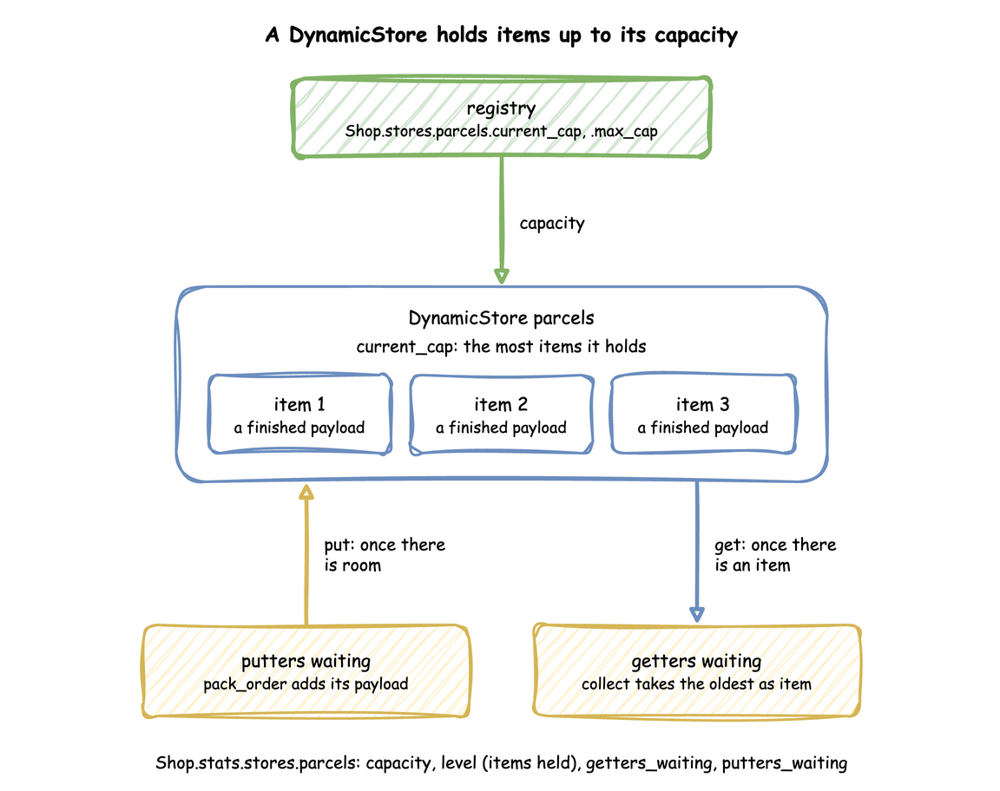

Stores and Containers: DynamicStore and DynamicContainer
A resource is held and given back. Stores and containers hold things that tasks take away and add: items, or an amount. This page shows how to declare them, how tasks put and get, and what a live change does.
What It Is
- A store holds items, each one a value of its own: parcels on a shelf waiting for a courier, orders in a buffer. A task puts an item in, and another takes the oldest out.
- A container holds an amount: boxes in a bin, fuel in a tank, a stock level. A task takes some, and another adds some.
Both have a capacity. A task that takes waits while there is not enough, and a task that adds waits while there is no room. Stock uses a container in the shop.
How to Use It
Declare Them
A container has a current_cap, its capacity, the largest amount it holds; a max_cap, the largest capacity a live change can set; and a level, the amount it holds when the run starts, 0 when left out. A store has a current_cap and a max_cap, in whole items, and starts empty unless it lists items (Start With Items and Serve by Priority). run() builds a DynamicContainer and a DynamicStore for each one the context declares; a store and a container cannot share a name.
| docs/snippets/yaml/stores_containers.yaml:container | |
|---|---|
| docs/snippets/pages/stores_containers.py:builder-container | |
|---|---|
A DynamicContainer built with no init starts at the level its ContainerConfig gives; init= sets another.
Take and Add
A task takes with get and adds with put. For a container, each names the container and an amount: a number; an expression, such as payload.boxes for a field of the previous task's payload; or in the builder, a function of the task id and the previous task's payload. The amount is 1 when left out. For a store, each names the store: a put adds the task's finished payload as the item, and a get takes the oldest item and passes it to the task's function as item.
| docs/snippets/yaml/stores_containers.yaml:take | |
|---|---|
get(amount), put(amount), put(item) and get() are SimPy events: yielding one waits until it succeeds, and a store's get() succeeds with the item.
A task with a resource gets its unit first and then takes its get, so it waits for stock while holding the unit. A task adds its put after its service time, then publishes the finished event. Tasks and Processes lists every step.
Start With Items and Serve by Priority
A store can hold items when the run starts, as parcels left from yesterday: items lists them in the order a get returns them. A store with priority returns the item with the lowest priority first, as SimPy's PriorityStore does; its items are [priority, item] pairs, and a task's put gives each new item its priority, a number or an expression such as attr.priority. Items of equal priority come out in the order they went in. A store cannot start with more items than its current_cap; the blueprint or add_store is refused with the reason.
| docs/snippets/yaml/parcel_store.yaml:store | |
|---|---|
A task's put takes the priority the same way: put={"store": "parcels", "priority": "attr.priority"}.
A low-level priority store holds simpy.PriorityItems. wrap(item, priority) makes one ranked by the priority and then by a rising number, which is how the builder and YAML keep equal priorities in order; a plain PriorityItem(priority, item) also works, with no order among equal priorities.
A get on a priority store takes no priority of its own and is refused with one: the item's priority decides the order. Priorities compares priority storage with a resource's priority queue.
Pick an Item, or Give Up Waiting
A store get can take a filter, a condition that picks which item it takes, as SimPy's FilterStore does. item.<field> reads the item offered, beside the names any condition reads, such as attr.area for the entity's own attribute. The get takes the oldest item that matches and waits while none does; a waiting get that matches nothing does not stop a later one from taking an item that matches it. A priority store takes no filter, because SimPy has no store that both ranks and filters; the blueprint or run() refuses one with the task's name.
A task's patience covers its whole wait, for its wait, then its resource and then its get. When it runs out, the task publishes reneged and its get is cancelled, so it takes nothing later. In the low-level API, cancel() on a put or get event that has not succeeded takes it out of its queue, as in SimPy: a cancelled get takes nothing, and a cancelled put adds nothing. item_field adds the item a YAML task's get took to its payload, and a builder function receives it as item:
A filter can also be a function of the item: "filter": lambda parcel: parcel["area"] == "north".
item.<field> can also be read in the task's put and next, after its get. Filtered Inventory uses a filter and patience on a shelf of shirts.
Registry Paths, Readings and Conditions
A container has three registry paths, <sim_id>.containers.<name>.current_cap, .max_cap and .level; a store has <sim_id>.stores.<name>.current_cap and .max_cap. With statistics at the minimal level or above, each publishes four readings, such as Shop.stats.containers.stock.level:
| Reading | Store | Container |
|---|---|---|
capacity |
items it can hold | largest amount |
level |
items held | amount held |
getters_waiting |
tasks waiting to get an item | tasks waiting to take an amount |
putters_waiting |
tasks waiting to put an item | tasks waiting to add an amount |
basic adds level_avg, the level averaged over time; Statistics describes it. These are the readings of the blueprint above at 30 and 40 seconds, before and after the stock count below:
At 30 seconds the bin is empty and two orders wait for boxes; at 40 seconds the count has put 50 boxes in, those two have taken theirs, and the shelf of parcels is full, with two packed orders waiting for room.
A condition in a task's next reads a level as level.<name>, so an order can go to backorder when level.stock == 0, as Task Flow shows.
Example: Stock, Parcels and Express Orders
The stock example puts it together: packing takes a box from a container and puts the parcel in a store, which starts with two parcels from yesterday, and a courier collects them. Express orders go first, at the packers and, as the parcels store is a priority store, at the courier. The stock runs out, so packing waits until a restock at 40 seconds sets the level to 30. It needs no Docker service and ends on its own.
Quick Start
desflow examples get downloads the example at the release you install, into a folder of its own. Pick uv or pip:
The whole file is examples/yaml/stock.yaml.
Quick Start
desflow examples get downloads the example at the release you install, into a folder of its own. Pick uv or pip:
The whole file is examples/builder/stock_example.py.
Quick Start
desflow examples get downloads the example at the release you install, into a folder of its own. Pick uv or pip:
The whole file is examples/low-level/stock_example.py.
Example: Filtered Inventory
The filtered-inventory example puts the filter and the patience together: packed orders go on one shelf as parcels for the north or the south, and each courier takes the oldest parcel for its own area, or leaves without one after 20 seconds. It needs no Docker service and ends on its own after 120 simulation seconds.
Quick Start
desflow examples get downloads the example at the release you install, into a folder of its own. Pick uv or pip:
The whole file is examples/yaml/filtered_inventory.yaml.
Quick Start
desflow examples get downloads the example at the release you install, into a folder of its own. Pick uv or pip:
The whole file is examples/builder/filtered_inventory_example.py.
Quick Start
desflow examples get downloads the example at the release you install, into a folder of its own. Pick uv or pip:
The whole file is examples/low-level/filtered_inventory_example.py.
How It Works
A container keeps a level between 0 and its capacity, with a queue of getters and a queue of putters. A get succeeds as soon as the level covers its amount, and a put as soon as there is room for all of it; until then each waits in its queue, in the order it arrived:

A store keeps a list of items, up to its capacity. A put adds an item at the end, and a get takes the first, so items leave in the order they came; a get with a filter takes the first item its filter accepts:

SimPy and desflow. Underneath are SimPy's Container; a FilterStore for a store, which serves its gets as Store does while no waiting get has a filter; and a PriorityStore for a priority store, which hands out the lowest item first. A full put that waits for room and an empty get that waits for an item or an amount are checked against plain SimPy in all three APIs; SimPy Compatibility lists the checks. SimPy's capacities are fixed when they are created; desflow's follow the registry, keep the registry's level in step with every put and get, and report each change to the statistics. SimPy and desflow compares the two.
Under Live Changes
- Capacity follows
current_cap, clamped to between 0 andmax_cap. A higher capacity wakes waiting putters. A capacity below what is held destroys nothing: puts wait until enough has been taken. - A container's level is set by an update to its
levelpath, as a stock count or a restock from outside would. The new level is clamped to between 0 andcurrent_cap, with a warning, and it wakes both queues: a higher level serves waiting getters, and a lower one can make room for putters. current_capis the capacity, not a level. A model that used a container'scurrent_capas a level, such as the wear of a roll, moves it tolevel.
The stock count in the blueprint above, in each way of writing:
| docs/snippets/pages/stores_containers.py:builder-level | |
|---|---|
Stability and Limits
- A container that never refills blocks its getters for good, and a task that waits for stock while holding a resource blocks the resource too. Supply has to keep up with demand, as Stock shows.
- Whole items. A store's capacity is a whole number, and it holds items, not amounts.
- A filter checks every waiting get on each put. A store with many waiting gets and a filter that rarely matches does work in proportion to both, as SimPy's
FilterStoredoes. - One store or container per get or put. A task has at most one
getand oneput.